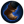
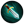
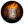
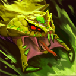

Веномансер
Історія
Лесайл Смертоносець, Веномансер
В отруйних джунглях острову Джиді кожна повзуча, літаючa чи ходяча істота містить у собі отруту. Ця отрута кипить у венах та булькає у шлунках усіх отруйних звірів, що стрибають по ліанам з одного токсичного дерева на інше, з яких стікає отруйна кислота. Та, навіть з урахуванням усього цього отруйного звіринця, Веномансер визнається найсмертельнішим з усіх тамтешніх мешканців. Багато років тому травник на ім’я, Лесайл, зайшов у затоку Фраджі на своєму човні у надії знайти корисні екстракти, що добуваються з коріння та кори місцевої флори, але замість цього його спіткала жорстока доля. Коли Лесайл пройшов всередину джунглів острову Джиді, то наткнувся на замасковану під епіфіт рептилію, котра негайно вкусила травника, варто було тому потягнутися до неї. Він відчайдушно узявся готувати протиотруту з місцевих рослин, добре, що знань у нього вистачало: змішав отруту щойнозадушеної рептилії з нектаром броненосної орхідеї. За лічені миті до повного паралічу травник увів собі антидот шипом орхідеї і впав у кому. Сімнадцять років потому щось заворушилося під багаторічним шаром перегною — це був Веномансер. Раніше Лесайл Травник, а тепер Лесайл Смертоносець. Його свідомість хоч і збереглася, але повністю змінилася, а стара плоть перегнила у нову матерію — живучу тканину, у котрій змішалися отрута рептилії та токсична оболонка броненосної орхідеї. Отруйні джунглі Джиді передали корону новому повелителю — якому незабаром стали вклонятися і якого стали боятися навіть найбільш люті хижаки. Невеликий острів незабаром став замалий для Веномансера, і залишки людського голоду змусили його покинути острів для пошуку нових отрут і нових жертв.

Роль
- Підтримка
- Напад
- Ініціація
- Облога
- Знерухомлення
Лесайл Смертоносець, Веномансер - це герой з дальнім типом атаки, основною характеристикою якого є cпритність. Його перше вміння, Отруйний подих, випускає по прямій лінії кулю, наповнену отрутою, в результаті чого вони отримують як миттєву, так і періодичну шкоду, а їх швидкість пересування і атаки знижується. Пасивне вміння, Отруйний укус, додає до звичайних атак отруту, яка знижує швидкість пересування. Третє вміння викликає Чумний вард, який атакуватиме ворожих юнітів і споруди. Вард отримує поточний рівень вашого вміння Отруйний укус, завдаючи 50% від повної шкоди. Ультимативне вміння, Отруйний вибух, розсіює навколо себе кільце отрути, яке періодично завдає шкоди. Ефект цього вміння не може опустити здоров'я істоти нижче одиниці(1). Поліпшення із Скіпетром Аганіму збільшує періодичну шкоду і тривалість Отруйного вибуху, а також зменшує час її перезарядки.
Атрибути
 18 + 1.85
18 + 1.85 22 + 2.6
22 + 2.6 17 + 1.8
17 + 1.8
| Рівень | Базові | 1 | 25 |
|---|---|---|---|
| Здоров'я | 200 | 560 | 1840 |
| Регенерація здоров'я | 0.25 | 0.79 | 2.72 |
| Мана | 50 | 254 | 1010 |
| Регенерація мани | 0.01 | 0.69 | 3.22 |
| Шкода | 19-21 | 41-43 | 123-125 |
| Броня | 0 | 3.14 | 14.91 |
| Магічна шкода | 0% | 1.06% | 5.01% |
| Атак за секунду | 0.58 | 0.71 | 1.2 |
| Швидкість пересування | 285 | ||
| Швидкість обертання | 0.4 | ||
| Радіус бачення | 1800/800 | ||
| Радіус атаки | 450 | ||
| Швидкість польоту атаки | 900 | ||
| Анімація атаки | 0.3+0.7 | ||
| Базовий час атаки | 1.7 | ||
| Магічний опір | 25% | ||
| Розмір зіткнення | 24 | ||
| Ноги | 0 | ||
Вміння

Отруйний подих |
||
|---|---|---|
| Здібність | Діє на | Шкода |
| Спрямована на точку | Ворогів | Магічна |
|
Випускає по прямій лінії кулю, наповнену отрутою. Отруєні ворожі істоти отримують миттєву і періодичну шкоду, а також уповільнюють свій рух. Отруйний подих завдає шкоди кожні 3 секунди. |
||
| Тривалість застосування: | 0+0.57 | |
| Дальність застосування: | 800 | |
| Дальність проходження: | 850 | |
| Радіус: | 125 | |
| Початкова шкода: | 25/50/75/100 | |
| Періодична шкода: | 10/40/70/100 | |
| Сповільнення пересування: | 50% | |
| Тривалість: | 15 | |
 |
21/20/19/18 | |
 |
125 |

Отруйний укус |
||
|---|---|---|
| Здібність | Діє на | Шкода |
| Пасивна | Ворогів | Магічна |
|
Звичайні атаки Веномансера завдають шкоди від отрути й уповільнюють рух ворожих істот. |
||
| Періодична шкода: | 6/12/18/24 | |
| Сповільнення пересування: | 11%/12%/13%/14% | |
| Тривалість сповільнення: | 6/9/12/15 |

Чумний вард |
|
|---|---|
| Здібність | Шкода |
| Спрямована на точку | Фізичний |
Установлює чумний вард, що атакує ворожих істот і споруди. Вард має магічний імунітет, а також отримує здібність Отруйний укус поточного рівня, завдаючи 50% від повної шкоди. |
|
| Тривалість застосування: | 0+0,63 |
| Дальність застосування: | 850 |
| Тривалість: | 40 |
|
5 |
|
20 |

Отруйний вибух |
||
|---|---|---|
| Здібність | Діє на | Шкода |
| Ненапралена | Ворогів | Магічна |
Розсіює кільце отрути, яка завдає періодичної шкоди всім ворогам довкола. Отрута не може вбити ворога, залишаючи принаймні 1 очко здоров’я. Покращується зі Скіпетром Аганіма. |
||
| Тривалість застосування: | 0+0,87 | |
| Радіус: | 575 | |
| Ширина: | 255 | |
| Шкоди за секунду: | 30/55/80 | |
| Тривалість: | 16 | |
|
140/120/100 | |
|
200/300/400 |